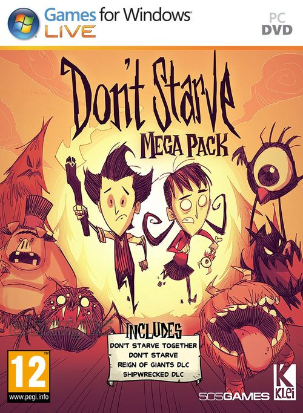

Dont Starve Together v568393 3.09 GB
Género: Supervivencia
Don't Starve es un videojuego de supervivencia con elementos de survival
horror y roguelike lanzado en 2013. Fue desarrollado y publicado por la
empresa de videojuegos independiente Klei Entertainment.
El juego reta al
jugador para sobrevivir en un entorno de desierto por el mayor tiempo posible. .